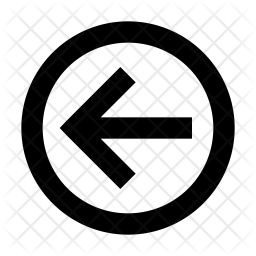
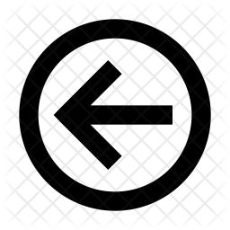

 بُنيَانُ
الكَعبَةِ
 بُنيَانُ
الكَعبَةِ 

فَلَمَّا بَلَغَ رَسُولُ اللَّهِ صَلَّى اللهُ عَلَيهِ وَسَلَّمَ خَمسًا وَثَلَاثِينَ سَنَةً، اجتَمَعَت قُرَيشٌ لِبُنيَانِ الكَعبَةِ ، وَكَانُوا يُهِمُّونَ بِذَلِكَ لِيُسَقِّفُوهَا وَيَهَابُونَ هَدمَهَا وَإِنَّمَا كَانَت رَضمًا فَوقَ القَامَةِ،
وَكَانَ البَحرُ قَد رَمَى بِسَفِينَةٍ إلَى جُدَّةَ لِرَجُلٍ مِن تُجَّارِ الرُّومِ، فَتَحَطَّمَت، فَأَخَذُوا خَشَبَهَا، فَأَعَدُّوهُ لِتَسقِيفِهَا، وَكَانَ بِمَكَّةَ رَجُلٌ قِبطِيٌّ نَجَّارٌ، فَتَهَيَّأَ لَهُم فِي أَنفُسِهِم بَعضُ مَا يُصلِحُهَا. وَكَانَت حَيَّةً تَخرَجُ مِن بِئرِ الكَعبَةِ الَّتِي كَانَ يُطرَحُ فِيهَا مَا يُهدَى لَهَا كُلَّ يَومٍ، فَتَتَشَرَّقُ عَلَى جِدَارِ الكَعبَةِ، وَكَانَت مِمَّا يَهَابُونَ، وَذَلِكَ أَنَّهُ كَانَ لَا يَدنُو مِنهَا أَحَدٌ إلَّا احزَأَلَّت وَكَشَّت وَفَتَحَت فَاهَا، وَكَانُوا يَهَابُونَهَا. فَبَينَا هِيَ ذَاتُ يَومٍ تَتَشَرَّقُ عَلَى جِدَارِ الكَعبَةِ، كَمَا كَانَت تَصنَعُ، بَعَثَ اللَّهُ إلَيهَا طَائِرًا فَاختَطَفَهَا، فَذَهَبَ بِهَا، فَقَالَت قُرَيشٌ: إنَّا لَنَرجُو أَن يَكُونَ اللَّهُ قَد رَضِيَ مَا أَرَدنَا، عِندَنَا عَامِلٌ رَفِيقٌ، وَعِندَنَا خَشَبٌ، وَقَد كَفَانَا اللَّهُ الحَيَّةَ.
فَلَمَّا أَجمَعُوا أَمرَهُم فِي هَدمِهَا وَبِنَائِهَا، قَامَ أَبُو وَهبِ بنِ عَمرِو بنِ عَائِذِ بنِ عَبدِ بنِ عِمرَانَ بنِ مَخزُومٍ- قَالَ ابنُ هِشَامٍ: عَائِذُ بنُ عِمرَانَ بنِ مَخزُومٍ فَتَنَاوَلَ مِن الكَعبَةَ حَجَرًا، فَوَثَبَ مِن يَدِهِ، حَتَّى رَجَعَ إلَى مَوضِعِهِ، فَقَالَ: يَا مَعشَرَ قُرَيشٍ، لَا تُدخِلُوا فِي بِنَائِهَا مِن كَسبِكُم إلَّا طَيِّبًا، لَا يَدخُلُ فِيهَا مَهرُ بِغَيٍّ، وَلَا بَيعُ رِبًا، وَلَا مُظلَمَةُ أَحَدٍ مِن النَّاسِ
ثُمَّ إنَّ قُرَيشًا جَزَّأَت الكَعبَةَ، فَكَانَ شِقُّ البَابِ لِبَنِي عَبدِ مَنَافٍ وَزُهرَةَ، وَكَانَ مَا بَينَ الرُّكنِ الأَسوَدِ وَالرُّكنِ اليَمَانِي لِبَنِي مَخزُومٍ، وَقَبَائِلُ مِن قُرَيشٍ انضَمُّوا إلَيهِم، وَكَانَ ظَهرُ الكَعبَةِ لِبَنِي جُمَحٍ وَسَهمٍ، ابنَي عَمرِو بنِ هُصَيصِ بنِ كَعبِ بنِ لُؤَيٍّ، وَكَانَ شِقُّ الحَجَرِ لِبَنِي عَبدِ الدَّارِ بنِ قُصَيٍّ، وَلِبَنِي أَسَدِ بنِ العُزَّى بنِ قُصَيٍّ، وَلِبَنِي عَدِيِّ بنِ كَعبِ .
ثُمَّ إنَّ النَّاسَ هَابُوا هَدمَهَا وَفَرِقُوا مِنهُ، فَقَالَ الوَلِيدُ بنُ المُغِيرَةِ: أَنَا أَبدَؤُكُم فِي هَدمِهَا، فَأَخَذَ المِعوَلَ، ثُمَّ قَامَ عَلَيهَا، وَهُوَ يَقُولُ: اللَّهمّ لَم تُرَع - قَالَ ابنُ هِشَامٍ: وَيُقَالُ: لَم نَزِغ - اللَّهمّ إنَّا لَا نُرِيدُ إلَّا الخَيرَ. ثُمَّ هَدَمَ مِن نَاحِيَةِ الرُّكنَينِ، فَتَرَبَّصَ النَّاسُ تِلكَ اللَّيلَةَ، وَقَالُوا: نَنظُرُ، فَإِن أُصِيبَ لَم نَهدِم مِنهَا شَيئًا وَرَدَدنَاهَا كَمَا كَانَت، وَإِن لَم يُصِبهُ شَيءٌ، فَقَد رَضِيَ اللَّهُ صُنعَنَا، فَهَدَمنَا.
فَأَصبَحَ الوَلِيدُ مِن لَيلَتِهِ غَادِيًا عَلَى عَمَلِهِ، فَهَدَمَ وَهَدَمَ النَّاسُ مَعَهُ، حَتَّى إذَا انتَهَى الهَدمُ بِهِم إلَى الأَسَاسِ، أَسَاسِ إبرَاهِيمَ عَلَيهِ السَّلَامُ، أَفضَوا إلَى حِجَارَةٍ خُضرٍ كَالأَسنِمَةِ آخِذٌ بَعضُهَا بَعضًا.
ثُمَّ إنَّ القَبَائِلَ مِن قُرَيشٍ جَمَعَت الحِجَارَةَ لِبِنَائِهَا، كُلُّ قَبِيلَةٍ تَجمَعُ عَلَى حِدَةٍ، ثُمَّ بَنَوهَا، حَتَّى بَلَغَ البُنيَانِ مَوضِعَ الرُّكنِ ، فَاختَصَمُوا فِيهِ، كُلُّ قَبِيلَةٍ تُرِيدُ أَن تَرفَعَهُ إلَى مَوضِعِهِ دُونَ الأُخرَى، حَتَّى تَحَاوَزُوا وَتَحَالَفُوا، وَأَعَدُّوا لِلقِتَالِ.
فَزَعَمَ بَعضُ أهل الرِّوَايَة: أَن أَبَا أُمِّيَّةَ بنَ المُغِيرَةِ ، وَكَانَ عامئذ أَسَنَّ قُرَيشٍ كُلِّهَا، قَالَ: يَا مَعشَرَ قُرَيشٍ، اجعَلُوا بَينَكُم فِيمَا تَختَلِفُونَ فِيهِ أَوَّلَ مَن يَدخُلُ مِن بَابِ هَذَا المَسجِدِ يَقضِي بَينَكُم فِيهِ، فَفَعَلُوا. فَكَانَ أَوَّلَ دَاخِلٍ عَلَيهِم رَسُولُ اللَّهِ صَلَّى اللهُ عَلَيهِ وَسَلَّمَ، فَلَمَّا رَأَوهُ قَالُوا: هَذَا الأَمِينُ، رَضِينَا، هَذَا مُحَمَّدٌ، فَلَمَّا انتَهَى إلَيهِم وَأَخبَرُوهُ الخَبَرَ، قَالَ صَلَّى اللهُ عَلَيهِ وَسَلَّمَ: هَلُمَّ إلَيَّ ثَوبًا، فَأُتِيَ بِهِ، فَأَخَذَ الرُّكنَ فَوَضَعَهُ فِيهِ بِيَدِهِ، ثُمَّ قَالَ: لِتَأخُذَ كُلُّ قَبِيلَةٍ بِنَاحِيَةٍ مِن الثَّوبِ، ثُمَّ ارفَعُوهُ جَمِيعًا، فَفَعَلُوا: حَتَّى إذَا بَلَغُوا بِهِ مَوضِعَهُ، وَضَعَهُ هُوَ بِيَدِهِ، ثُمَّ بَنَى عَلَيهِ.
| الرضم أَن تنضد الحِجَارَة بَعضهَا على بعض من غير ملاط | رَضمًا |
| تبرز للشمس. وَيُقَال: تشرقت: إِذا قعدت للشمس لَا يحجبك عَنهَا شَيء | فَتَتَشَرَّقُ |
| رفعت رَأسهَا | احزَأَلَّت |
| صوتت باحتكاك بعض جلدهَا بِبَعض | كَشَّت |
| أَي تقسمتها بَيتهم | جَزَّأَت |
| Feared it, were afraid of it | فَرِقُوا مِنهُ |
| لم تفزع. وَالضَّمِير فِيهَا يعود على الكَعبَة
"لم تُرَع" على بناء المفعول، من الروع، أي: لا يكن في قلبك خوف لم ترع: أي لم تخف. والمعنى: لا خوف عليك بعد هذا. |
لَم تُرَع |
| أَي لم نمل عَن دينك وَلَا خرجنَا عَنهُ، يُقَال: زاغ عَن كَذَا، إِذا خرج عَنهُ | لَم نَزِغ |
| Reached/Touched the stones | أَفضَوا إلَى حِجَارَةٍ |
| جمع سَنَام، وَهُوَ أَعلَى الظّهر، وَأَرَادَ أَن الحِجَارَة دخل بَعضهَا فِي بعض
كَمَا تدخل عِظَام السنام بَعضهَا فِي بعض، فشبهها بهَا
«كالأسنة» . وَهِي جمع: سِنَان. شبهها بأسنة الرماح فِي الخضرة |
كَالأَسنِمَةِ |
| جَعَلَه على حِدَةٍ، أي مُنفرداً وَحدَهُ | عَلَى حِدَةٍ |
| انحَازَت كل قَبيلَة إِلَى جِهَة | تَحَاوَزُوا |